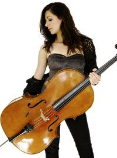
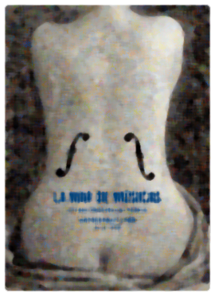
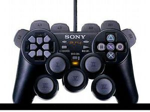

Violonchelo
 De: La Frikipedia, la enciclopedia extremadamente seria.
De: La Frikipedia, la enciclopedia extremadamente seria.
| De la serie Instrumentos de tortura auditiva:
|
| Violonchelo
|
| 
|
Anda que no está buena la moza
|
|
| Color
|
Suele ser marrón
|
| Estilo
|
Clásico, Jazz, depende de los complementos
|
| Época
|
Hace tres semanas
|
| Músico asociado
|
Violador Violonchelista
|
| Nacionalidad
|
Por sus caderas tiene que ser de Portugal
|
| Malo o Bueno
|
Depende del que lo toque
|
| Canciones famosas
|
La cucaracha
|
| Sonido
|
Hace sonido de violonchelo
|
| Nitidez
|
Si le pasas el polvo, buena
|
| Afinado en
|
Llave de la vecina del cuarto de do
|
| Notas
|
No, no es un Violín
|
«Un hombre con una guitarra no es nadie comparado con un hombre con un cello»
~ Eicca Toppinen Cellista virtuoso todavía vivo
 Un cello en blanco y negro
El violonchelo es un instrumento musical del tipo CORDÓFONO según la clasificación instrumental ideada por Sachs. En un diccionario de gilipollas convencional suele poner que es un instrumento de cuerda frotada, pero ni puñetero caso. Grandes artistas y vídeos de youtube demuestran que el chelo se puede tocar con un arco, con los dedos a pizzicatto, con los dientes a mordiscos e incluso con la mirada (solo para telequinéticos... ¿qué te pensabas, so lelo?.
Por cierto, recordad que sois unos novatos en cuanto a violonchelos, de lo contrario no estarías leyendo este artículo. Así que conviene saber que cualquier cosa relativa al cello (como se le conoce vulgarmente) que se afirme en un libro de música o la kiwipedia probablemente no sea cierta. ¿Por qué? Pues todo músico que se precie sabe que hablando de música no hay norma que no te puedas saltar.
Como es un Cello
El Violonchelo (alias Cello, alias Chelo) es un instrumento grandote grandote, más o menos como el intérprete cuando está sentado. Casi siempre está hecho de madera, a menos que sea de juguete... Por cierto, el instrumento tiene que ser de cualquier tonalidad marrón y con un mástil negro, a no ser que hablemos de cellos rebeldes e insumisos (mira que los hay... algunos son azules, rosa, negro, y todos indican algún antojo raro del fabricante o del comprador).
Está compuesto por varias partes claramente diferenciables:
- Una caracolina chunga con cuatro tornillazos como puños, cuya disposición recuerda a la cabeza de Frankenstein. Sirve para poder afinar el instrumento, parte I.
- Un palo bien tocho, normalmente de color negro. En el anverso del mismo podemos divisar las cuerdas. Además, para que suene una nota u otra debemos presionar en distintos puntos de la cuerda (hay que presionar hasta el fondo para emitir sonidos diferentes)
- Una buena barriga de madera que abulta un huevo pero está hueca por dentro. Sirve para que un chelo acústico suene, ya que con
masturbar frotar las cuerdas con el arco o pinchándolas con los dedos no hay suficiente. El mundo de los eléctricos es diferente, ya lo verás más abajo.
- Unas cuerdas IMPRESCINDIBLES para hacer sonar notas musicales. Suelen ser cuatro, pero un chelo friki puede tener las que le dé la gana (pasa lo mismo con el color, siempre hay quien lo acaba pintando de azul...).
- Un puente un poco más abajo del final del palo bien tocho. Es para que las cuerdas se alineen y no bailen por ahí sueltas. La otra función es poner una distancia mínima de espacio entre madera y cuerda.
- Microafinadores opcionales. Sirven para afinar el instrumento parte II. Suelen usarlos los novatos porque es más fácil afinar por ahí. Lo que esos tornillos siempre hacen ruidos extraños y el cello se queja cada vez que lo tocas. Ello ha obligado a músicos profesionales a quitarle esa pieza inútil (para ellos, que saben tanto) y afinar a clavilla pelada.
- Un buen culo que sirve para que el sonido tenga una caja de resonancia donde producirse. La diferencia con la barriga es que ella está arriba y el culo está abajo.
 Éste es uno de los últiles con los que podemos tocar el violonchelo
- Las efes: Pues para que se oiga el proceso auditivo procedente de la barriga y el culo. Ah, sí, son esos bujeros alargados a lado y lado del puente.
- La pata ajustable, que sirve para que no le pegues hostias al cello cuando lo sientes en el suelo. Tiras y ajustas esa cosa de supuesto metal y con ello se supone que el instrumento no se recibe daños en la madera.
- El arco: No confundir con este instrumento particular de los elfos, aunque algun friki ya habrá hecho alguna adaptación fijo... Sirve para
masturbar frotar las cuerdas y que suene tal y como todos lo conocemos. Eso sí, no siempre es necesario, puesto que es posible tocar el cello con los dedos (se llama pizzicatto y se toca como si fuese una guitarra o un bajo). Vale, sí, hay quien le pega mordiscos al cello, y quien lo usa como un instrumento de percusión o cosas peores. Pero estamos en la frikipedia y no en la pesadillapedia. Así que no voy a contar historias de terror.
Nacimiento y Familiares
El cello nació allá por el Renacimiento, hijo de una Viola de Brazo y Padre Desconocido. Los músicos barrocos descubrieron la viola a base de ir experimentando con otros instrumentos; les aumentaban esto, le daban diferentes formas a la caja, les hacían la liposucción en los laterales y listos, otro cacharro que hace sonar música.
Dentro de la familia de los Cuerdafrotada hubo un baby boom entre el Renacimiento y el Barroco. Se idearon miles y miles de variedades de violas que se pareciesen a la madre, pero los hijos más destacados fueron:
- Soyungenio Stradivari. De hecho, un violín de esos no vale menos de un MILLÓN DE AURELIOS.
- Viola actual. Como Violín, pero un poco más grande, se mide por pulgadas y es una octava más grave. Nació para que la gente supiera como era la madre, más o menos. El resto fueron creados para que no toda la cuerda frotada sonara igual.
- Violonchelo. Es el que tiene el sonido más cálido y agradable. Hermano de Violín y tío de Contrabajo, la gente solía marginarlo al fondo de la melodía y dejar el protagonismo a instrumentos más agudos. Después del barroco esto se acaba y vienen nobles chelistas que demostrarán que el cello no sólo es un acompañamiento o un sazonador.
- Contrabajo, el benjamín de la familia. Sirve para tocar los huevos a sus intérpretes a la hora de transportarlo. Y si no, quién no cree que es un coñazo levantar una caja de madera extradelicada más grande que tú... es como llevar un ataúd a cuestas (si el ataúd recibe daños se le quitan vidas al intérprete, por esto hay que vigilar tanto y tanto).
El Cello hoy en día
Actualmente el cello se coloca en las orquestras para hacer de bajo y darle el protagonismo a los instrumentos más agudos. No obstante hay autores más compasivos que reparten mejor los papeles e incluso alguno ha escrito un concierto o dos para dicho instrumento. Para que no caiga en la deshonra ni en el olvido. Ya.
Otros intérpretes lo han sacado de su papel de simple acompañamiento en la mayoría de obras y le han dado el brillo y la fama que merece: varios grupos de rock lo han añadido a su formación, han inventado el Metal Sinfónico, lo han patentado y se han forrado.
También sirve para que los estudiantes de chelo priven a sus padres de la siesta, obligándolos a dejar de hacer el vago y ponerse a trabajar (ya sea en la casa o que se vayan a la oficina, logrando así un uso no catalogado del chelo).
Curiosidades/Miscelánea

Estos te enseñarán que se puede hacer con un arco y un cello...
- Los fabricantes de chelos se llaman Luthiers. Los mismos se dedican a fabricar y reparar la mayor parte de instrumentos musicales de madera y con cuerdas que hay sobre la faz de la Tierra. Nota: un suicida una vez trajo una escoba. No seas suicida. Los luthiers son muy orgullosos.
- Los cellos se miden por cuartos: 1/4, 2/4, 3/4 y 4/4. ¡Como los compases! Fácil de recordar y además eso logrará que tu hermanito de 4 años toque el instrumento.
- En teoría el cello toca notas graves, pero un grupo musical revelador del cello llamado Apocalyptica demostró que un chelista-que-te-cagas es capaz de tocar las notas más agudas del violín con el cello.
- Un cello vale un pasta que no flipas.
- Si te quieres comprar tu primer chelo te puedes comprar un pack con arco+instrumento+funda+cuerdas por un precio relativamente barato: entre 600 y 900 leros. En cambio, si quieres un cello profesional, te arruinarán porque te tendrás que comprar por separado cada una de las piezas que componen el cello. De hecho, la gracia de un cello es que te lo puedas tunear a gusto.
- IMPORTANTE: Para que el cello suene, no vale sólo con todo lo anterior. Para poder tocar con un arco, primero hay que frotar las
guarras cerdas del arco con una pastilla de resina especial, antes que intentar pasar el arco por el instrumento.
- Se han inventado los chelos eléctricos. Se parecen a las guitarras eléctricas. Sólo que a veces los C.E. parecen una serpiente enroscada.
- ¿Sabías que la mayoría de la gente que nunca ha tenido un chelo cerca no sabe ni lo que es el puente ni sabría ubicarlo?
- ¿Sabías que no era tan difícil de tocar como nos decían?
- Antiguamente algunos afinaban el chelo grave como un contrabajo, otros lo afinaban depende del humor con el que se levantaban y así haciendo. Hasta que durante la primera formación de la Primera Orquestra la liaron, formaron el Concilio de Trento y desde entonces la afinación estándar está entre 440-442 Hz.
- Se han encontrado pinturas rupestres ilustrando una de las primeras formaciones de chelistas. Las pinturas prueban ser del Neolítico, y muestran a cuatro personas tocando una versión primitiva de lo que sería el chelo en un futuro.
- Obviamente, lo de arriba me lo he inventado yo para joder al personal.
Autor(es):
- El Sevillano
- Mad peW
- Axelaxel12
- Not so friki
Frikipedia 2005-2016, Licencia
GFDL 1.2 - Extraído por FrikiLeaks